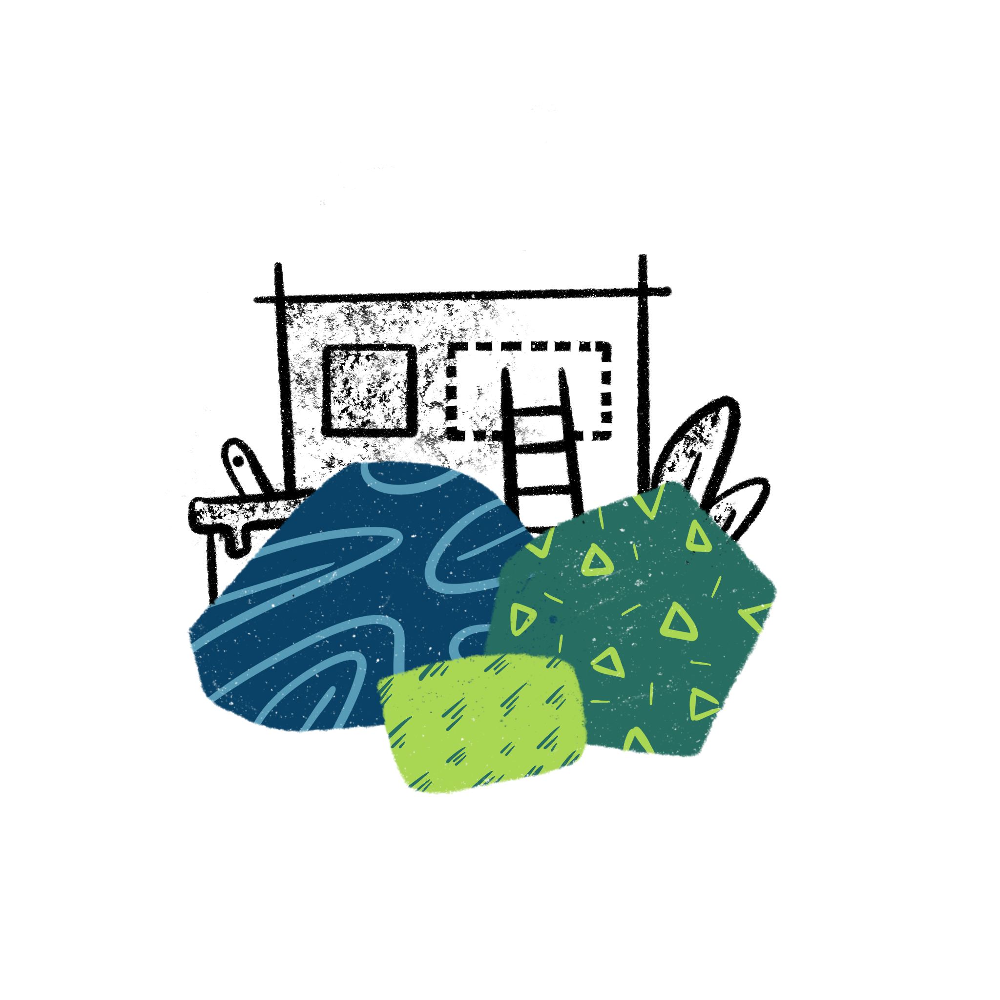
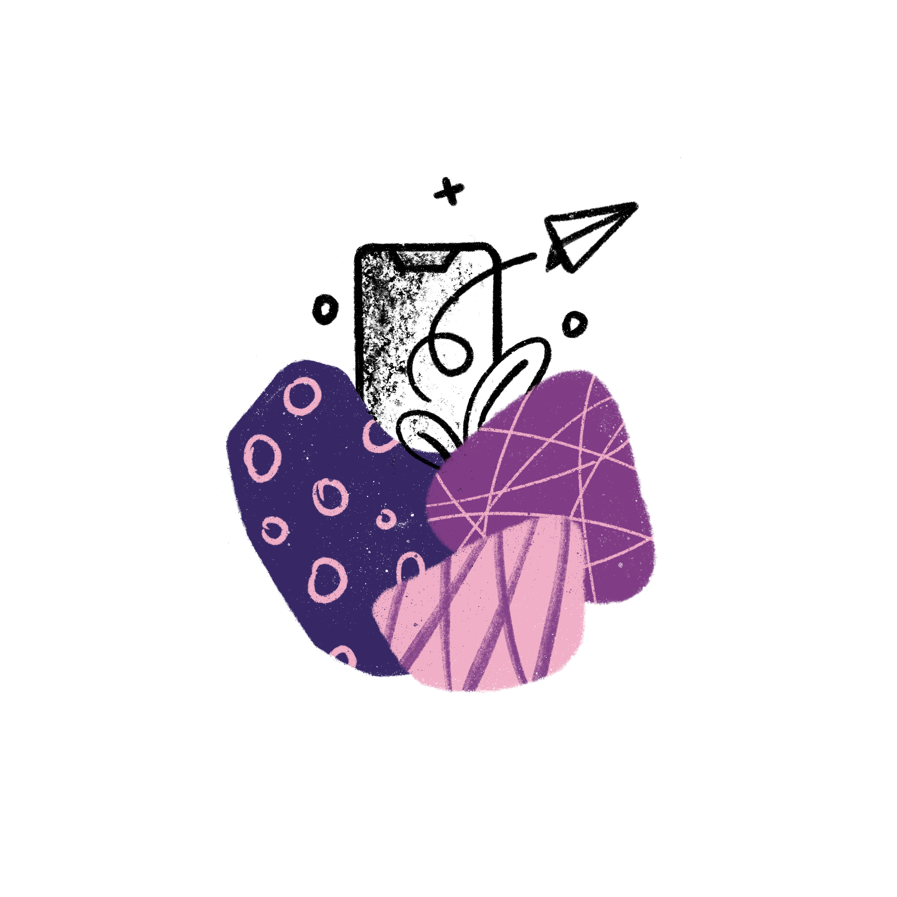

<ion-content fullscreen class="ion-padding" scroll-y="false">
  <ion-slides pager="true" [options]="slideOpts">
    <ion-slide>
      
        
        <h2>Welcome</h2>
        <p>The <b>ionic conference app</b> is a practical preview of the ionic framework in action, and a demonstration of proper code use.</p>
    
    </ion-slide>
  
    <ion-slide>
      
      <h2>What is Ionic?</h2>
      <p><b>Ionic Framework</b> is an open source SDK that enables developers to build high quality mobile apps with web technologies like HTML, CSS, and JavaScript.</p>
    </ion-slide>
  
    <ion-slide>
      
      <h2>What is Ionic Appflow?</h2>
      <p><b>Ionic Appflow</b> is a powerful set of services and features built on top of Ionic Framework that brings a totally new level of app development agility to mobile dev teams.</p>
    </ion-slide>
  
    <ion-slide>
      
      <h2>Ready to Play?</h2>
      <ion-button 
      expand="block"
      color="info" 
      [routerLink]="['/login']" 
      router-direction="forward"
      >Continue <ion-icon slot="end" name="arrow-forward"></ion-icon></ion-button>
    </ion-slide>
  </ion-slides>
</ion-content>